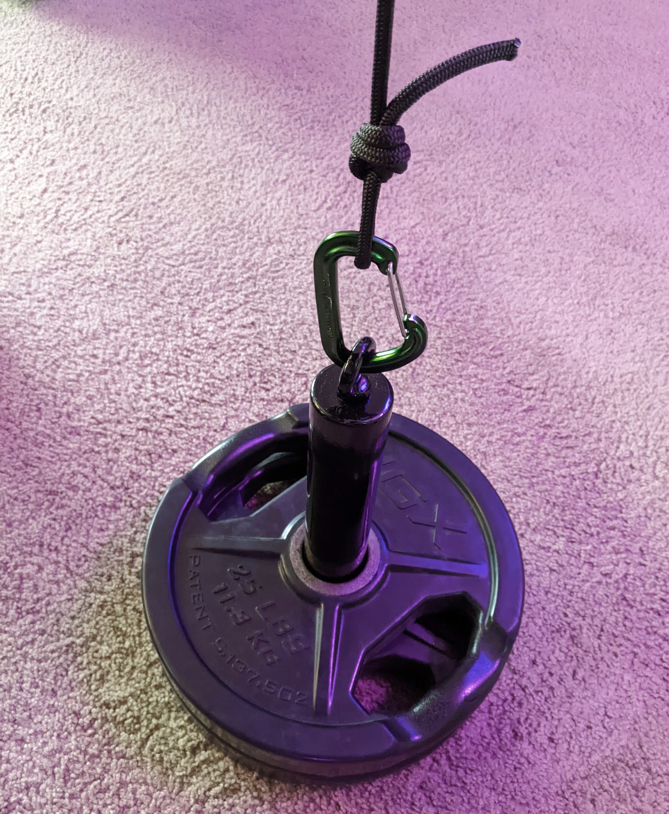
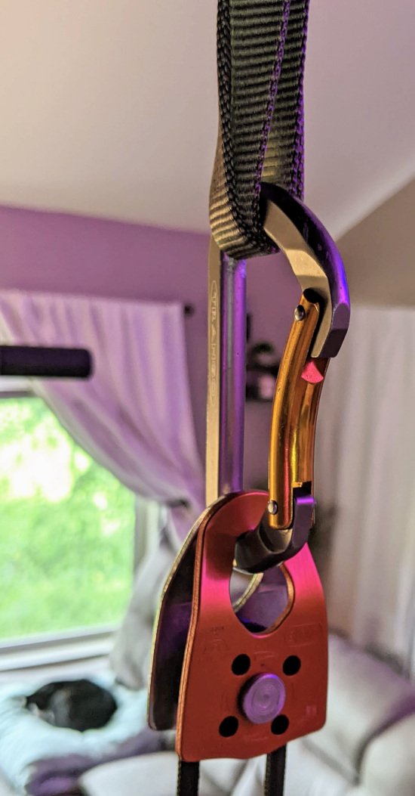
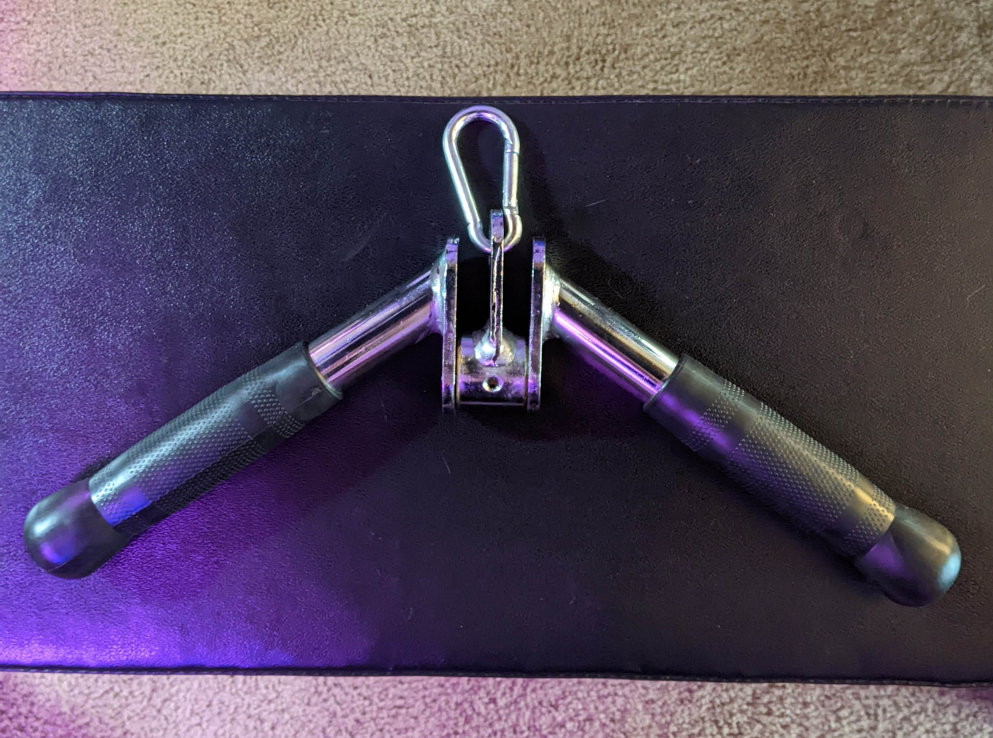

By Coach Matt | 3 min read
How to Build a Home Cable Pulley System
For about $30, you can get a climbing-grade rescue pulley and 30 feet of 6mm accessory cord from REI. That's the core of what you need to setup a cable pulley system at home that you could never be strong enough to overload.
Cable machines tend to be one of the most popular pieces of equipment at the gym, so being able to program some or all of those same movements at home means never having to worry about waiting for (or taking turns with) randos at the gym. I don't mind that whole dance personally, but I still prefer having equipment all to myself whenever possible. Having a home cable system makes that possible.
Make sure you hang the pulley from something *sturdy*, a little above head height (mine hangs from a nylon runner looped around the top of the power rack in my living room). Add some clips/carabiners and something to hold onto (handles, rope, bar, etc.) and you have all you need for a variety of face pulls, press-downs, pull-downs and rows at home!

All of this pictured is about $80, even though I'm using exceptionally strong, quality climbing equipment rated at 7-20 kN (1500-4500 pound-force).
You don't have to buy it all at once: start with the cord + pulley and either some exercise handles or a rope attachment like the one pictured above (either one is about $15) for around $45 entry price, then you can add more accessories over time. You can loop the cord through/around weights at first, but to make it extra easy you can eventually add a plate loader of some sort, as I did recently.
 This is so much easier and quieter than looping the rope through weight handlesThe only "catch" is that you'll want to learn how to tie a figure-eight knot and cut/seal nylon rope so the ends don't fray over time. I used to be a climbing instructor, so tying figure-eights and sealing cut cord with a lighter is second nature to me, but this might knot be your thing if working with rope seems intimidating.
For the do-it-yourselfer who doesn't want to spend $100+ for a Spud pulley system that only comes with nylon handles, this list of materials is all you need to put together a better setup that you can trust to hold up to heavy use for years, and it'll cost a little less anyway:
- Rescue Pulley
- Accessory Cord - 6mm x 30ft
- Nylon Sling - 25cm
- Wire-gate Carabiner - 3x
- Exercise Handles
- Rope Attachment
- Weight Loading Plate
Here's what the first four items from that list look like when hung from a solid anchor point:
 Nylong loop, carabiner, pulley, 6mm accessory cordI've used this kind of system for myself and with a variety of clients for over 10 years now. Press-downs and face pulls are two of my favorite exercises, but there are just no barbell/dumbbell alternatives that hit quite the same; this pulley system allows me to do these lifts regularly without having to go to the gym. Priceless is too strong a word, so let's just say this is worth quite a lot to me.
While this setup doesn't completely replace the versatility of a fully equipped commercial cable machine, it adds a lot of quality exercise options to your home gym, and you can slowly add attachments over time to expand your options. For example, there's a wide v-bar attachment at the gym I go to; I discovered it feels *exquisite* with heavy press-downs. It feels so much better than the rope to me, and I wanted to be able to include heavy press-downs in my home workouts, so I ordered that same v-bar recently and have been absolutely loving it.
 Love at first rep! Even 100+ lb sets feel smooth as butter in my wrists and elbowsIf you, too, enjoy some of these cable machine variations and would like to be able to do them at home, if perhaps you've already thought about buying or building something like this but weren't sure what exactly to get, well now you know exactly what to get! Now you just need to DO IT!